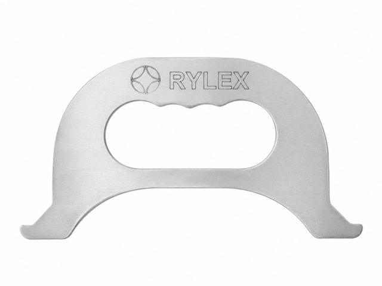
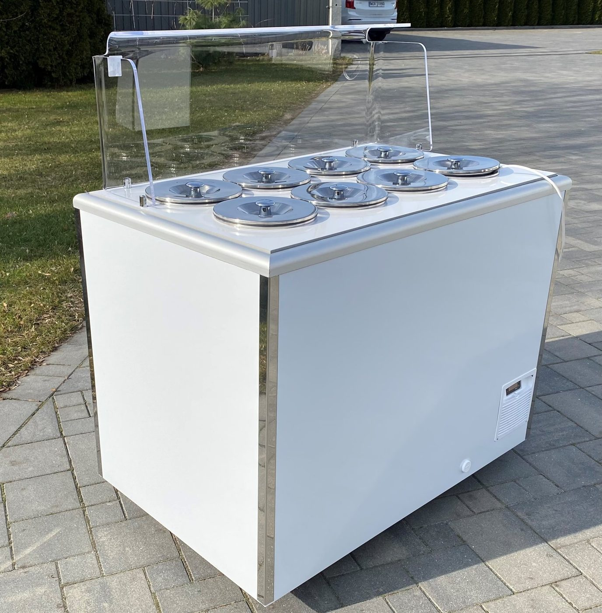
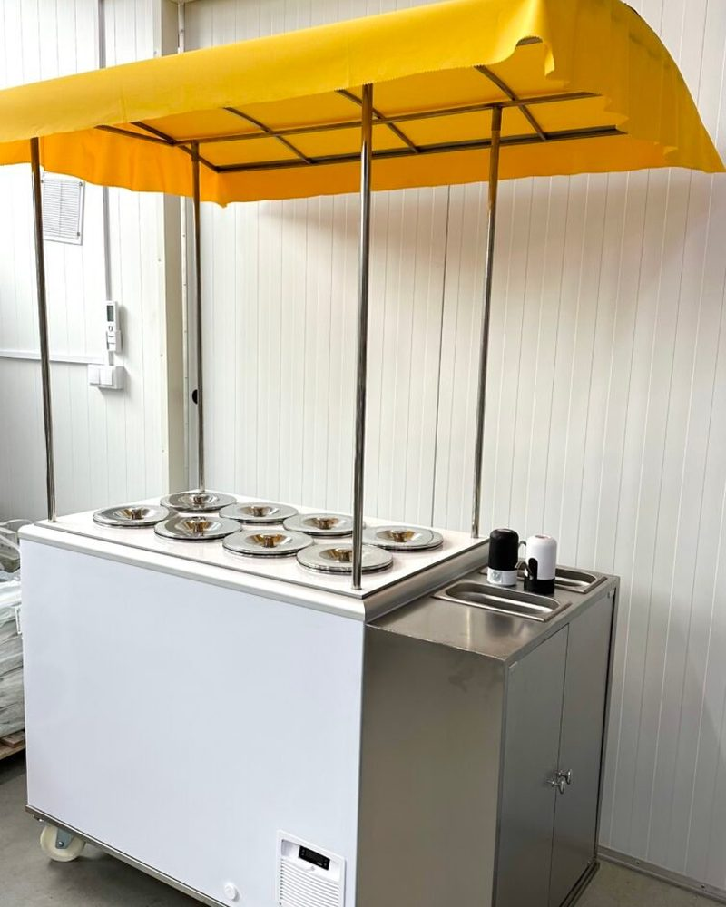
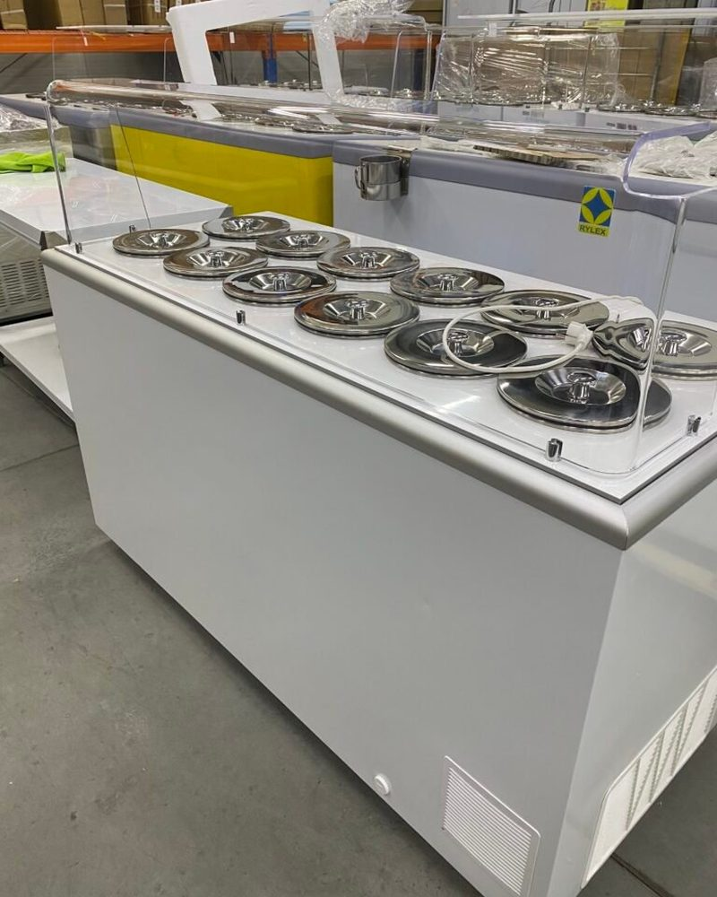
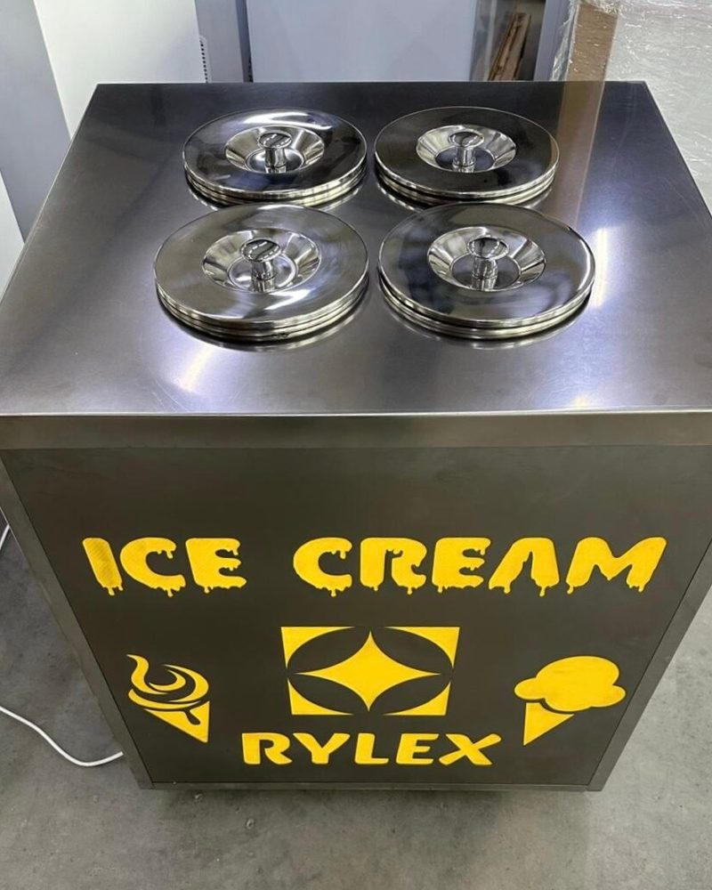
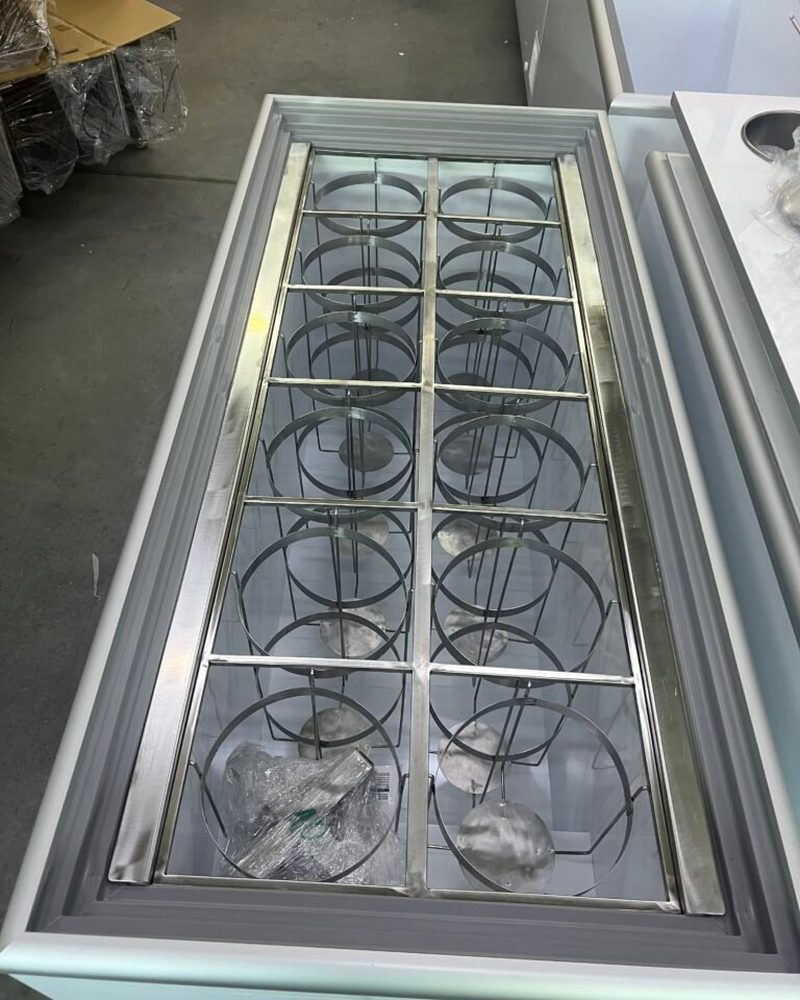
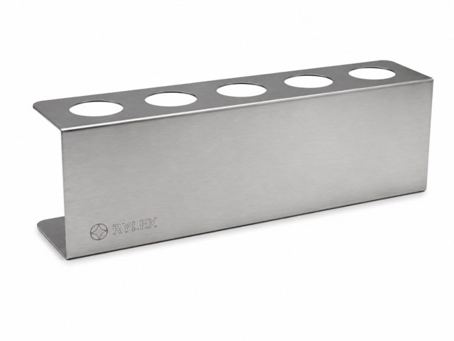
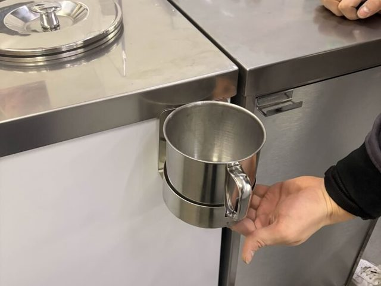
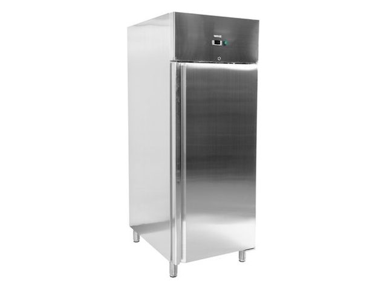

Uchwyt do kuwet Pozzetti
Opatentowany uchwyt RYLEX ze stali AISI 304 (1,2 mm) do szybkiego wyjmowania kuwet.
50 zł netto

Strona główna / Konserwatory do lodów
Duńska baza zamrażarki i polska zabudowa w całości ze stali nierdzewnej AISI 304. Sześć modeli od 4 do 14 komór, ceny od 6 290 zł netto.
Gwarancja 24 miesiące, ogólnopolski serwis, realizacja od 3 do 14 dni.
Wszystkie modele pracują na czynniku R290, w temperaturze otoczenia do +43°C (klasa tropikalna), z chłodzeniem statycznym bez termoobiegu. Różnią się liczbą komór, pojemnością i długością.
Wybierz model, zaznacz wyposażenie dodatkowe i sprawdź orientacyjną cenę. Zapytanie wyślesz jednym przyciskiem, a RYLEX potwierdzi ostateczną cenę i termin.
Do wyboru bez dopłaty, zgodnie ze specyfikacją modelu.
Ceny netto dla modelu RYLEX 8D według cennika opcji z rylex.eu.
Cena orientacyjna, ostateczną potwierdza RYLEX.
Po kliknięciu otworzy się Twój program pocztowy z gotową wiadomością do RYLEX (rylex@interia.pl), zawierającą wybraną konfigurację. Wystarczy ją wysłać.
Wolisz porozmawiać? Doradca handlowy: 602 190 611, pn.-ndz. 8:00-20:00.
Porównanie modeli. Wspólne dla wszystkich: czynnik R290, klasa klimatyczna 7, sterowanie elektroniczne lub manualne, rozmrażanie ręczne, chłodzenie statyczne, korpus biały i szary.
Kuwety: liczba w komorach + w zapasie. Pasują kuwety włoskie Ø 200 mm, wysokość 250 mm.





Opatentowany uchwyt RYLEX ze stali AISI 304 (1,2 mm) do szybkiego wyjmowania kuwet.
50 zł netto

Stal nierdzewna, 3, 4, 5 lub 6 otworów (215-410 × 85 × 110 mm).
od 45 zł netto

Nieprzepływowa, ze stali nierdzewnej, montowana przy stanowisku sprzedaży.
190 zł netto

Yato YG-05230, 54 kuwety 360×165×120 mm, -18 do -22°C, sterownik Dixell.
4D: 4 w komorach + 2 w zapasie, 6D: 6 + 6, 8D: 8 + 6, 10D: 10 + 8, 12D: 12 + 10, 14D: 14 + 12. Pasują kuwety włoskie Ø 200 mm, wysokość 250 mm.
Nie. Skraplacz jest bezobsługowy - dzięki powiększonej powierzchni i dobrej cyrkulacji powietrza nie zapycha się kurzem.
Nie. Konserwatory RYLEX są projektowane tak, aby nie wymagały termoobiegu. Powiększony skraplacz daje równomierne chłodzenie bez dodatkowych wentylatorów, a masa lodowa nie jest przewiewana zimnym powietrzem.
Tak. Możliwe jest malowanie w dowolnym kolorze z palety RAL - zaznacz tę opcję w konfiguratorze i wpisz numer koloru.
Tak, jednak zalecamy wersję z kółkami, która zapewnia lepszy dopływ powietrza od spodu oraz niższą temperaturę pracy agregatu.
Wszystkie konserwatory objęte są 24-miesięczną gwarancją. Zapewniamy także ogólnopolski serwis.
Standardowo od 3 do 14 dni, zależnie od konfiguracji i wyposażenia dodatkowego.